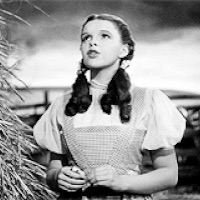
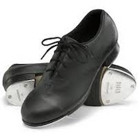

Training
How I've prepared to do it
-

Age 6
Why, yes, I do know that song!
One of my earliest memories is when my Aunt Gene visited us from California. She asked me if I knew the song "Somewhere Over the Rainbow". I nodded and started singing. Unfortunately, I didn't know how to end the song, so I just kept repeating the first verse. She eventually cut me off.
Since then, I've taken voice lessons from Kathy Ludowise and Daniel Hughes.
-

College
Could you please stop tapping?
I was introduced to tap dancing as a freshman at Purdue. One Sunday morning in my Senior year, I was enthusiastically practicing on the vinyl kitchen floor in my second floor apartment. After a few minutes, I heard a knock on the front door. My downstairs neighbor, nursing a hangover, calmly asked me to stop tap dancing, because my kitchen was right over her bedroom.
Since then, I've taken tap lessons from Dotty Lester-White, Fosse dance from Donna Cerio, and Jazz at Marie Stinnett's studio.
-

Summer 2003
Now say that with a Southern accent!
I took advantage of a layoff notice to sign up for a nine-week Theatre Artists Institute workshop one summer. Forty hours per week included dialect training from Kimberly Mohne Hill and acting training from Greg Fritsch. Best summer ever!
-
Still
Working
On It!